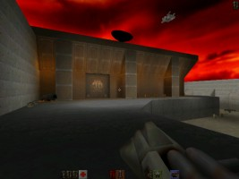
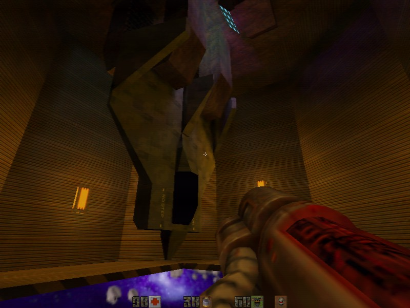
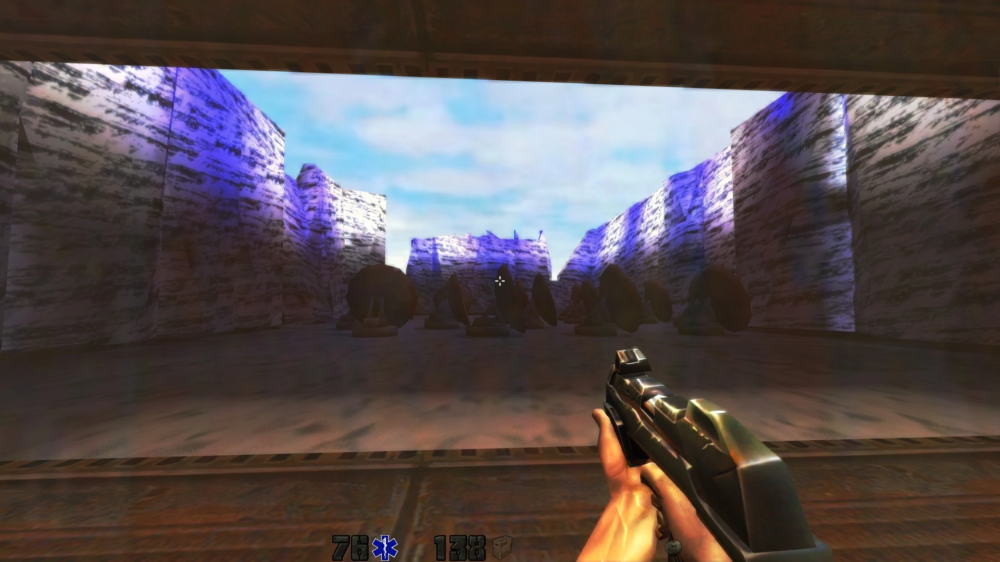

Всегда любил дополнения от этих авторов и всегда хотел перепройти их на движке с улучшенной графикой (например, на KMQuake 2), однако авторы не стали публиковать исходники модов, поэтому я взял на себя смелость воссоздать контент, содержащийся в gamex86.dll с нуля (а именно оружие, монстров и некоторые скрипты.). Больше недели усердной работы - и в результате получилась практически полная копия (за исключением некоторых отличий, о которых чуть позже).
Ссылка на оригинальную страничку авторов (архив): web.archive.org...
Так как исходников данных модов в открытом доступе в сети нет, пришлось все делать самому. До этого с C++ не был знаком, поэтому пришлось очень туго, но мануалы по Quake 2 game.dll помогли. Показатели монстров (урон, здоровье и т.д.) вычислял "на глазок", например количество выстрелов из бластера для сбития щита и тому подобное. Весь новый код я пометил своим именем (petunindan), чтобы было проще найти новые строки, если вдруг вам захочется что-нибудь исправить. Проще всего это делать при помощи Notepad++: включаете поиск по файлам, выбираете папку src_kmq2 и ищите "petunindan". Для компиляции использовал последнюю на Июнь 2021 года версию Visual Studio. В общей сложности, на написание всего этого ушло больше недели. Искренне надеюсь, что авторы оригинала не рассердятся за все это копирование без спроса. В противном случае - спрячу статью. Общее описание нового кода и основные отличия от оригинала читайте в конце текста.
Адаптировал под KMQuake 2 - нарисовал иконки нового оружия и предметов. Мультиплеер не тестировал. Все новые материалы запакованы в .pk3, чтобы старая версия для обычного Quake 2 их не подключала. За основу был взят код дополнений, что также ввело новый, более умный ИИ, чем в оригинале.
Так как способа назначить несколько оружий на одну клавишу не нашел, решил назначить новое оружие на другие кнопки. По умолчанию:
V - контактная граната. Либо Команда "bind V use proximity grenades".
N - лазер обратной связи. Либо Команда "bind N use feedback laser".
M - плазменная пушка. "bind M use plasma gun".
Window Of Retaliation - аддон для Quake 2, содержащий в себе 9 уровней.
Действие происходит после поражения Макрона. Вы играете роль пилота, выполняя миссию "найти и уничтожить", зачищая остатки сил Строгг.
Выполняя рутинную миссию, вы были сбиты на отдаленной планете, принадлежащей Строгг, и обнаруживаете, что они планируют удар мести. Вы должны разгадать характер этого удара и остановить его, прежде чем Земля будет уничтожена.
Window of Retaliation вводит новое оружие и монстров в стандартный набор Quake 2.

The Armageddon Device - аддон для Quake 2, содержащий в себе 8 уровней.
К Земле направляется астероид размером с половину луны. Когда он ударит, вся жизнь на Земле будет уничтожена. Это не обычный кусок планетарного мусора. У этого камня есть примитивный термоядерный привод и самый мощный щит, который мы когда-либо видели. Это оружие - последняя надежда Строгг на победу, под кодовым названием The Armageddon Device (Устройство "Армагеддон"). Эту информацию мы получили, когда корабль с Земли перехватил шаттл Строгг по пути к астероиду. Щит генерируется и управляется из реактора на самой скале. Никто из Строгг не знает код деактивации. Есть три командира Строгг, каждый из них знает по две цифры шестизначного кода. Мы не ждем, что они скажут нам их добровольно.

Вы выступаете в роли элитного морпеха с задачей получить коды деактивации устройства. План действий: 1) Вас доставят в расчетное местоположение старта астероида. В тех местах есть планета класса М, и мы ожидаем найти там колонию Строгг. 2) Ваш капитан просканирует местность, чтобы найти подходящее место для скрытной посадки. 3) Вы возглавите команду из 4 человек и попытаетесь получить код деактивации от командиров Строгг. Ваш боевой компьютер был адаптирован для чтения церебральных имплантатов Строгг и извлечения кода. Это не может быть сделано, пока владелец импланта жив. 4) Когда вы найдете код, вам нужно будет найти способ попасть на астероид и отключить щит. 5) Наш военный корабль уничтожит скалу термоядерными зарядами. Удачи, солдат!

The Earth War - аддон для The Armageddon Device, содержащий в себе 9 новых уровней. События миссий, созданных Forrest "Gumpsta" Glithero, происходят на земле во время вторжения Строгг. Захватывающий экшен, враги и оружие из предыдущих дополнений. Для запуска данного дополнения запустите "The Armageddon Device", начните новую игру и выберите сложность. После загрузки игры откройте консоль и напишите "map park", эта команда перенесет вас в начало кампании "The Earth War".
Бластер ВВС
Пилотам выдается чуть более мощная версия стандартного бластера. Выпускает два заряда за выстрел в быстрой последовательности.
Лазер Обратной Связи
Потрясающее оружие. Использует модифицированную систему рельсовой пушки для зарядки мощного лазера, но для увеличение мощности пользователь может подпитывать исходящий импульс прямо через обратную связь зарядной камеры. Зарядка идет, пока спусковой крючок не будет отпущен, выпуская мощный луч, уничтожающий все на своем пути.
Видимый счетчик показывает уровень заряда в процентах.
100% заряд по мощности приблизительно сравним с BFG.
Внимание! Превышение 102% заряда перегружает оружие, что может вызвать большой взрыв! Тебя предупредили, солдат!
Оружие не имеет радиуса поражения по площади, но зато является высокоточным и быстрым, однако требует от стрелка точного прицеливания и контроля заряда.

Плазменная Пушка
Это оружие стреляет в автоматическом режиме зарядами перегретого газа. Заряды имеют небольшой радиус поражения по области и очень эффективны при автоматическом огне.
Благодарим команду Loki's Missions за любезное разрешение использовать их модель плазменной пушки.

Контактные Гранаты
Доступны только для метания и не могут быть использованы с гранатометом. Срабатывают, когда противник оказывается поблизости. Контактные гранаты можно отличить от обычных по желтой маркировочной полосе.
Солдат-Штурмовик
Является элитным гвардейцем сил мести Строгг. Вооружившись мощным экранным щитом и пулеметом может быть серьезным противником.

Hornet Class Flyer - Flyer класса "Шершень"
Экспериментальная модификация монстра "Flyer". Strogg пытались установить рельсовую пушку и генератор щита на раму, которая и так была перегружена.
Смертельно опасен в неожиданных атаках, особенно когда скрывается в рое обычных Flyer'ов. У него есть один недостаток: генератор, питающий щит, не может быть правильно охлажден на такой большой раме. Перегрузите его - и он взорвется. В результате искрящийся и дымящийся шершень становится легкой мишенью.

Прокси-Паразит
Паразит с привычкой бросать контактные мины. Смотри, куда ступаешь!
Предатели
Люди, перешедшие на сторону Строгг. Вооружены пулеметами и как правило держатся в группах.

Лазерный Гладиатор
Смертельный враг. Тяжело защищен, быстр и вооружен лазером обратной связи. Остерегайтесь!
Танк-Генерал
Верхушка иерархии танков. Эти ребята медленные, но хорошо вооружены и бронированы. Особенно проблемны в группах!
Танк Смерти
Быстрее и агрессивнее своих собратьев. Вооруженные плазменной пушкой и импульсным лазером, они не дадут вам права на ошибку! Легко узнаваемы по знаку черепа с костями.
Гипер-Танк
Финальный босс. Вооружен ракетами, гранатами, бластером и пулеметом, использует BFG, если дела идут совсем плохо.
Босс-Предатель
С использованием человеческой ДНК возникли проблемы - клоны оказались слишком хитры и поднялись на вершину иерархии Строгг, захватив власть. Также является научным гением, используя технологии Строгг в полную силу. Пользуется личным маскирующим устройством а также целым арсеналом оружия.
Бластер ВВС - от оригинала не отличается.
Лазер обратной связи - идентичен оригиналу за исключением того, что авторам оригинала удалось отвязать механику выстрела от анимации модели оружия, у меня так не получилось и мне пришлось изменять модель оружия под новый код.
Плазменная пушка - идентична оригиналу + боеприпасы.
Гипербластер - также как и в TaD каждые несколько выстрелов выпускает зеленый трассер.
Контактные гранаты - в оригинале использовались обычные гранаты, но часовой механизм был заменен на логику: "Враг подошел - мина взорвалась, свой подошел - мина не взрывается". Я тоже пытался так сделать, но не получилось, поэтому использовал логику прокс-гранат из дополнения "Ground Zero".
Солдат-Штурмовик - идентичен оригиналу.
Hornet Class Flyer - Flyer класса "Шершень" - идентичен оригиналу.
Прокси-Паразит - оригинал кидал прокси мины рядом с собой. В связи с изменением логики прокси гранат, теперь он кидает мину в сторону игрока, но флаг "grenade" позволяет монстрам обходить свои мины и не наступать на них.
Предатели - идентичны оригиналам, за исключением некоторых мелких отличий. И да, мой код для них - огромное награмождение, просьба не смеяться :D . Зато работает! Разве что босс может иногда забыть включить/выключить щит.
Лазерный гладиатор - идентичен оригиналу.
Танк-Генерал - идентичен оригиналу.
Танк Смерти - идентичен оригиналу.
Гипер-Танк - идентичен оригиналу. Код оружия был подсмотрен в StroggDM.
В одной из миссий есть задание уничтожить несколько монстров, в их числе танк, сидящий в кресле. Долго бился с этой задачкой, он упорно отказывался засчитываться, но вдруг я что-то добавил и он стал засчитываться. Что добавил - я сам не понял, но трогать не стал и не дыша закрыл файл.
ДНК Сканнер - Единственная вещь, которую я не смог сделать. На карте существуют "trigger_dna" и они активируются только тогда, когда у игрока в инвентаре есть "DNA Scanner". Как только я не пытался это сделать - ничего не работало. Главной проблемой стало найти код проверки инвентаря игрока - примеров попросту нет, а все попытки самому что-то написать вызывали вылет игры. Поэтому пришлось сделать так, чтобы триггеры активировались в любом случае.
Финальная загадка с цифрами - тот еще крепкий орешек, но его я раскусил, в отличие от предыдущего. Как я понял, в оригинале разработчики использовали какую-то систему с задействованием триггера, но я сделал по-своему, вроде работает.
Разработчики модов - Roseville Missions Team.
Адаптация под KMQuake2 - Petunindan
Вся оригинальная документация по модам в папке “rose_docs”.
